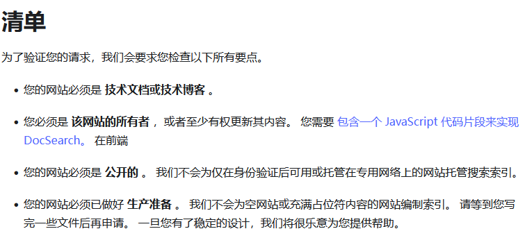
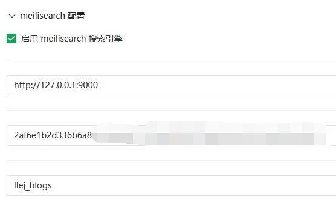
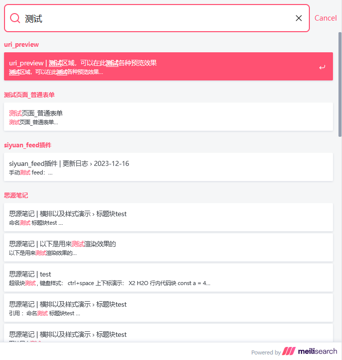

首页
自建meilisearch搜索
algolia docSearch
虽然是免费的，但对于网站有一定的要求

algolia docSearch 清单
如果无法达到的话，也可以尝试使用 meilisearch 来进行部署，文档：
https://www.meilisearch.com/docs/learn/what_is_meilisearch/overview
当建立好一个 meilisearch 实例之后，在 OceanPress 添加相关配置

配置无误的情况下，OceanPress会在生成完毕后将文档索引上传到该实例。
等待 meilisearch 索引完毕后即可进行搜索
配置站点搜索
可以使用
https://github.com/tauri-apps/meilisearch-docsearch
来作为搜索界面的前端
OceanPress 配置可以参考
使用 algolia 时的代码块配置
，将
meilisearch-docsearch
中对应的代码添加到 OceanPress 的代码块中即可使用 meilisearch 来进行搜索
预览结果

推广
如果你觉得自行配置很麻烦，不妨雇佣我来完成此工作
短期工作协议（预付费）：
爱发电购买
提供我所有技能来解决你的问题，一份时长为1小时。 我是偏前端的全栈开发，也可以为你提供更通用的其他技能，建议先和我沟通在购买。 当我全力在思考或者着手解决问题时是一小时，如果期间不需要我消耗精力的话我不会计算进时间。 支持未用完的额度返还。